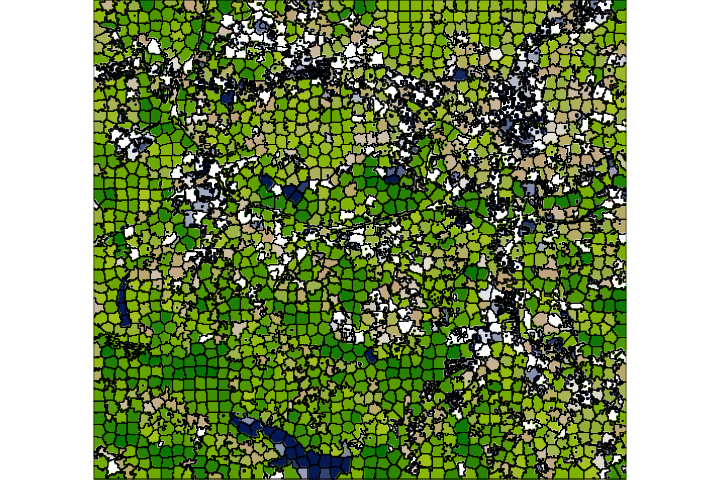

Convenience and speed with GRASS GIS 8.0 and 8.2
NCSU GeoForAll Lab
at the
Center for Geospatial Analytics
NC State University

May 26, 2022
Vaclav (Vashek) Petras
- Geospatial Research Software Engineer at NC State
- BS & MS in Geoinformatics, Czech Technical University in Prague, Czechia
- PhD in Geospatial Analytics, NC State
- GRASS GIS: Development Team, Project Steering Committee
- OSGeo: Charter Member

Community
-
Open community of users and developers
- Affiliations: industry, academia, government
- Contributions: code, documentation, free support, …
-
Project Steering Committee
- PSC Chair: Verónica Andreo (since February 2021)

Credit goes to the whole community, not just this talk's author.
General Features
- Open-source and directly user-driven development
- Processing tools: 400+ in core, 400+ addons
- Interfaces: graphical, command line, Python, C
- 3rd party interfaces: actinia (REST API), R, QGIS, OGC WPS
- Innovation with Stability & All-in-one Software Suite

Long-term Benefits
-
To individual users:
- Emphasis on backwards compatibility
- Learn once, use forever.
- Old commands, often work in new versions with minimal changes.
- Employer-independent
-
To organizations:
- No increasing license fees over time for usage
- Provider-independent, contractor-independent
- financial investments go to a public pool

Roadmap
- 7.8.7, Feb 23, 2022 Stability and fixes.
- 8.0.0, Feb 21, 2022 New startup, data management.
- 8.0.1, Feb 24, 2022 Stability and fixes.
- 8.0.2 Release Candidate 1, Apr 28, 2022 Stability and fixes.
- 8.2.0 Release Candidate 1, Apr 28, 2022 Available for testing.
- 8.2.0, May/June 2022 Jupyter, parallel r.neighbors, …
- 8.3.0, Spring 2023 Single window interface as the default.
major.minor.micro – micro (x.y.z) brings fixes, minor (x.y) brings features, major (x) brings features and possibly backward incompatible changes

Convenience Improvements
First-time User Experience
Initial project sets up automatically and suggestions for next steps are provided.
by Linda Kladivova & rest of the community (many reviews, video calls, user surveys, …)
No Startup Screen

Centralized Data Management
All data manipulation centered around revamped Data tab.
by Linda Kladivova, Anna Petrasova, Vaclav Petras
Single-Window GUI
One window with optimized layout.

Opt-in preview in 8.2: Settings > Preferences > General
by Linda Kladivova
Integration with Jupyter Notebooks
- Notebooks: Mix of text, code, results, images, …
- Usage: Prototyping, reproducibility, tutorials, …
- Now in GRASS GIS: Python functions for easy integration
by Caitlin Haedrich
Integration with Jupyter Notebooks
Web map with base maps, zooming, customizations, …

Integration with Jupyter Notebooks
Time-series visualization

Integration with Jupyter Notebooks
3D visualization
Semantic Labels for Rasters
-
attach a labels to raster maps
(e.g.,
S2_1orred)- image classification can use sematic labels to identify bands
- different scenes can then be classified if semantic labels are the same
- organize bands within one spatio-temporal dataset

by Maris Nartiss, Martin Landa, Markus Metz
Docker Containers
- Different flavours
- Built and updated automatically
- For all branches and tags

actinia
- REST API
- 3rd party project, open source
- github.com/mundialis/actinia_core
Speed
Multi-threading with OpenMP
More tasks done in parallel in the same tool
nprocsspecifies number of cores (processes, threads)memoryspecifies RAM in MB- Performance section in documentation describes the behavior

r.series (OpenMP parallel)
Output cell value is a function of the corresponding cells in the inputs.
by Aaron Saw Min Sern in 8.2
r.neighbors (OpenMP parallel)
Output cell value is a function of the cells around it.

by Aaron Saw Min Sern in 8.2
r.mfilter (OpenMP parallel)
Output cell value is a function of the cells around it.
by Aaron Saw Min Sern in 8.2
r.slope.aspect (OpenMP parallel)
Slope, aspect, curvatures and partial derivatives of an elevation raster.

by Aaron Saw Min Sern in 8.2
r.patch (OpenMP parallel)
Mosaic multiple rasters into one.

by Aaron Saw Min Sern in 8.2
More parallel tools
- Core tools: r.sun, v.surf.rst, r.sim.sediment, r.sim.water
- Addons tools: r.sun.daily, r.in.usgs, r.mapcalc.tiled, t.rast.what.aggr, r.connectivity.corridors, r.viewshed.exposure, and 14 more
-
Parallelizing custom Python scripts:
- GridModule (by tile)
- multiprocessing, ParallelModuleQueue (by task)

Faster External Data Links
-
r.external can link (open) external raster data faster.
- 2-5× faster computation of min & max
- almost no time if min & max in metadata
- almost no time if min & max are not needed later
- Great for workflows when only portion of the data is processed in GRASS GIS.

by Markus Metz
Improved HPC Readiness
- Recipes for High Performance Computing setups
- Better integration with conda environments
- Reduced potential for race conditions
- Easier to create parallel workflows
 by Vaclav Petras, Markus Neteler, Nicklas Larsson, …
by Vaclav Petras, Markus Neteler, Nicklas Larsson, …
More Features
Science and Code
-
What algorithm
- references to related scientific papers
- references to papers associated with tools or libraries
-
What exact code
- source code, its history, and latest change
-
DOI record with a copy of the code for each release
- One to cite all versions: DOI: 10.5281/zenodo.5176030
- One for each released version
-
How used
- usage visible in scientific literature
- GRASS GIS Google Scholar profile, h-index 93 (experimental)
→ transparency, reproducibility, provenance
Lidar Data Import with PDAL
- binning using any point dimension (including user defined ones, e.g., from PDAL filters)
- point filtering by values in any dimension
- support of 19 binning methods
- Linux and and macOS only. Help needed for Windows!

by Vaclav Petras and Maris Nartiss
Skeletons and Centerlines
v.voronoi tool can now create area skeletons and centerlines.
by Markus Metz
GitHub-centered Software Development
- Git
- PRs
- Issues
- GitHub Actions

Improved and Robust Code Quality Checks
- Python code formatted by Black.
- Python code checked against Flake8, some even Pylint.
- Most of warnings in C code removed and now checked.
- Code tested with CodeQL.

by Nicklas Larsson, Vaclav Petras, Anna Petrasova, Carmen Tawalika, ...
Addons Repository
- Community-maintained addons (aka extensions, plugins)
- A repository with the source code, not just a registry
- Separate from the main repository, but only one repository
- Best of both worlds:
- Broader community of contributors, including one-time contributors
- Single repository maintained by the core community

Valley Bottom Flatness Index
r.valley.bottom - Multi-resolution Valley Bottom Flatness (MrVBF)

by Helmut Kudrnovsky, Steven Pawley
Hydrologic Parameters Using a Flow Direction Raster
r.accumulate - weighted flow accumulation, subwatersheds, stream networks, and longest flow paths using a flow direction
See also: Physically-based hydrologic modeling using GRASS GIS r.topmodel
by Huidae Cho
Weighted layers for dasymetric mapping
r.area.createweight - Weighting layer for dasymetric mapping using a random forest regression model.
by Charlotte Flasse, Tais Grippa, Safa Fennia
Hydrologic Parameters Using a Flow Direction Raster
r.accumulate - weighted flow accumulation, subwatersheds, stream networks, and longest flow paths using a flow direction
See also: Physically-based hydrologic modeling using GRASS GIS r.topmodel
by Huidae Cho
Sentinel, THREDDS, …, netCDF, CSV
Automated download and import of common datasets i.sentinel, i.modis, i.landsat, r.in.usgs, r.in.nasadem, m.crawl.thredds, t.rast.import.netcdf, …

by Fondazione Edmund Mach, OpenGeoLabs, mundialis GSoC, NC State University, CONICET, Norwegian Institute for Nature Research, …
FUTURES
r.futures - set of tools for urban growth modeling

by NC State Center for Geospatial Analytics
PoPS
r.pops.spread - Pest or Pathogen Spread simulation

by NC State Center for Geospatial Analytics
Get involved!
Resources
- Documentation:
- Tutorials (my three favorites):
-
Books:
- Open Source GIS: A GRASS GIS Approach (the classic)
- Tangible Modeling with Open Source GIS (use-case-based with additional flavors)
- Open Source Approaches to Spatial Data Handling (broader context)
Support
- Community support
- user mailing list (with vast archives since 1991)
- GIS StackExchange (use increasing)
- GitHub Discussions (since September 2021)
- Commercial support Write to grass-dev or contact me privately if your name is not here!
Sponsoring
- Money and employee time donations are very important for GRASS GIS development. You can:
- organize or finance community sprints
- contribute to infrastucture needs (e.g., website)
- pay developers to implement new features and fix specific bugs
- New: opencollective.com/grass
vpetras@ncsu.edu
Twitter: vaclavpetras
LinkedIn: Vaclav Petras